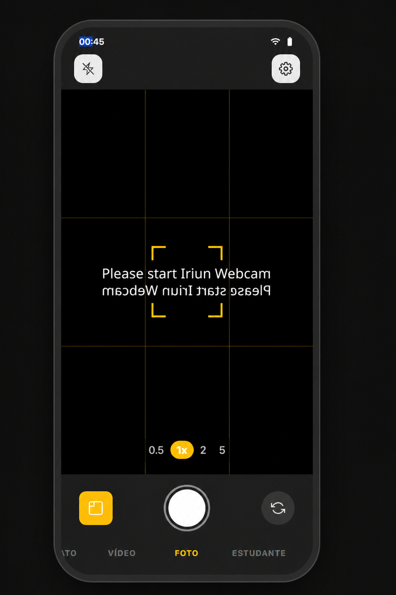
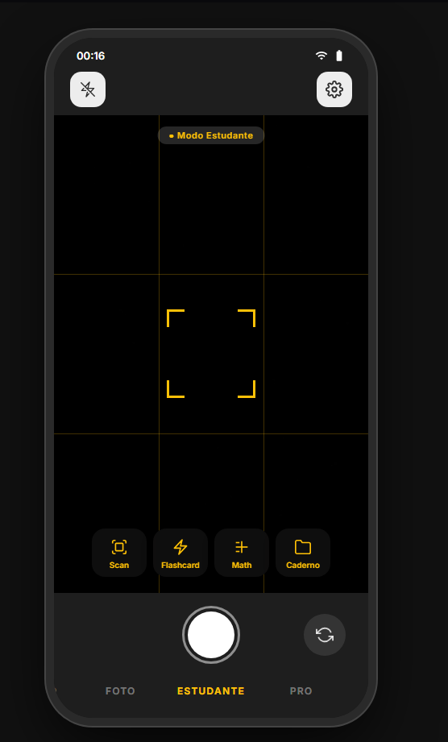
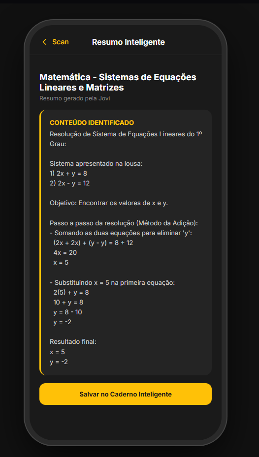
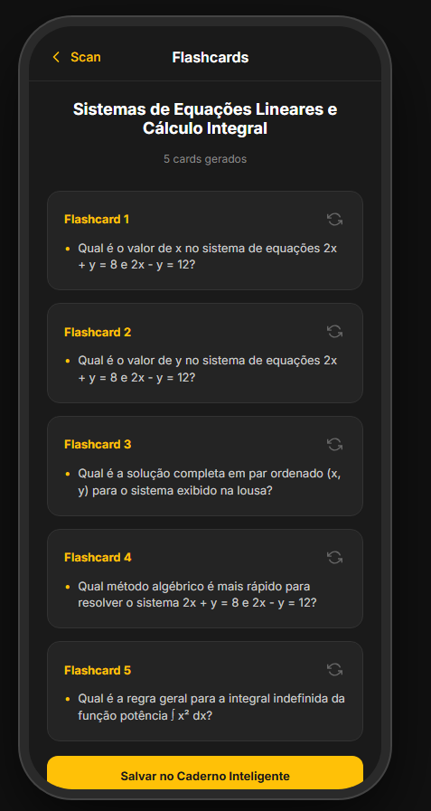
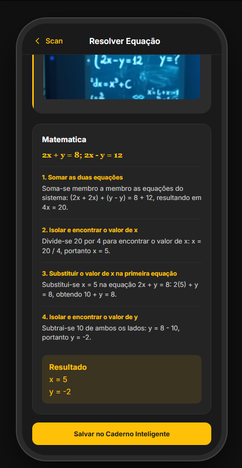
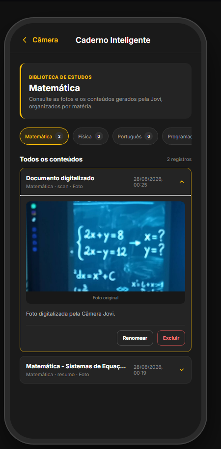
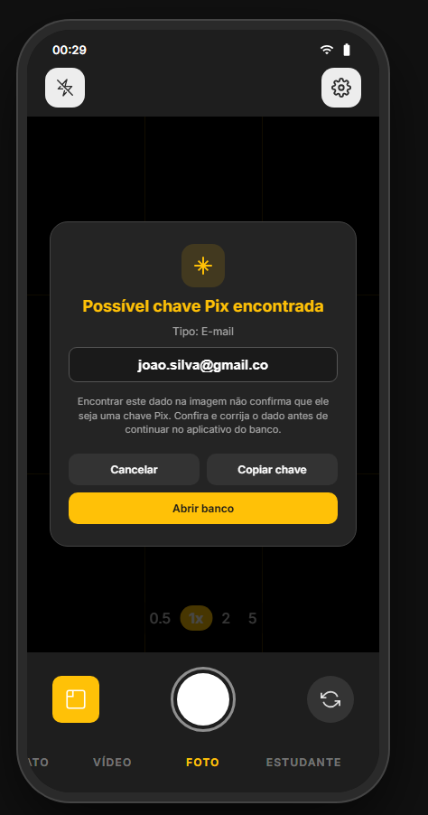

Fotos de lousa, anotações e exercícios se acumulam no celular sem contexto. Na hora de revisar, o estudante perde tempo procurando o conteúdo e tentando lembrar por que aquela imagem foi salva.
Challenge FIAP · Front-End Design
Do quadro ao código.
Do clique ao aprendizado.
A Câmera Jovi organiza a rotina de quem estuda tecnologia. Capture conteúdos, gere materiais de revisão e concentre o que importa em uma experiência simples, rápida e conectada.
- ✓ Funciona no navegador
- ✓ Pensada para estudantes
- ✓ Fluxo full stack

A solução
Uma câmera criada para simplificar a rotina de estudos.
A Câmera Jovi é a solução desenvolvida pela equipe para o Challenge: uma plataforma web que aproxima captura, organização e aprendizado em uma experiência única.
01
A gente registra muita coisa durante a aula. O problema é encontrar isso depois.
A Câmera Jovi transforma o momento da captura em parte do estudo. O registro passa pela aplicação, é processado e volta organizado para continuar sendo útil depois da aula.
Um projeto do Challenge FIAP pensado a partir da rotina real de estudantes.
COMO FUNCIONA
Da câmera à revisão, passo a passo.
O estudante escolhe o que precisa, registra o conteúdo e continua estudando sem precisar organizar tudo manualmente.
-
01
Começar
Abra a câmera
Permita o acesso à câmera do dispositivo para visualizar o conteúdo.
-
02
Preparar
Escolha o modo Estudante
Use o menu inferior da câmera para entrar no espaço dedicado aos estudos.
-
03
Registrar
Enquadre e capture
Aponte para a lousa, o caderno ou o exercício e pressione o botão de captura.
-
04
Escolher
Defina como quer estudar
Selecione resumo, flashcards ou resolução matemática para aquele registro.
-
05
Continuar
Revise e salve
Leia o material gerado e guarde a análise no caderno para consultar depois.
Pronto para estudar
O conteúdo deixa de ser apenas uma foto perdida e passa a fazer parte da revisão.
Testar a câmera ↗Público-alvo
Para quem vive entre aula, código e prazo.
A Câmera Jovi nasceu de uma rotina conhecida: muita coisa para aprender, pouco tempo para organizar e um celular sempre por perto.
Se o conteúdo passa pela câmera, a organização também pode começar nela.Quem aprende tecnologia
Para quem alterna entre código, documentação, exercícios e aulas práticas.
Quem está na faculdade
Para quem fotografa a lousa hoje e precisa encontrar aquele conteúdo na semana seguinte.
Quem estuda em grupo
Para turmas que compartilham registros e transformam o material da aula em revisão.
Quem aprende por conta própria
Para quem organiza cursos, projetos pessoais e estudos no próprio ritmo.
Não importa onde a aula acontece. A ideia é deixar o conteúdo pronto para ser retomado.
Galeria
Conheça as funcionalidades da Câmera Jovi.
Veja como a captura se transforma em conteúdo organizado para estudar e revisar.

Captura de conteúdo
Registra cadernos, lousas, textos e exercícios usando a câmera do navegador.

Resumo inteligente
Interpreta a imagem capturada e apresenta o conteúdo em um resumo organizado.

Flashcards
Transforma o conteúdo da imagem em perguntas e respostas para ajudar na revisão.

Resolução matemática
Identifica expressões matemáticas e devolve uma resolução detalhada.

Caderno inteligente
Reúne fotos e conteúdos salvos, organizados por matéria para consultar depois.

SmartPix
Procura possíveis e-mails e telefones na câmera e oferece ações de demonstração.
Nossa equipe
Explore mais fundo,
descubra mais valor.
Uma equipe de Engenharia de Software construindo uma solução para estudantes como nós.
VBAdicionar foto
Vitor de Castro Buzato
Desenvolvimento Full Stack
RM 569720
JPAdicionar foto
Joao Pedro Ferreira Pinheiro
Desenvolvimento Full Stack
RM 570569
JMAdicionar foto
Joao Pedro Gomes de Matos
Desenvolvimento Full Stack
RM 569934
DPAdicionar foto
Davi Pereira
Desenvolvimento Full Stack
RM 572337
GPAdicionar foto
Gabriel Palmieri
Desenvolvimento Full Stack
RM 570508Contato
Vamos conversar sobre educação e tecnologia?
Conheça o código do projeto, teste a aplicação ou envie uma mensagem para a equipe.